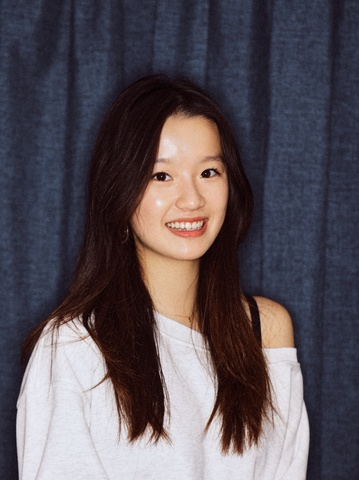

基本信息
备注
小红书4.7w粉
1-page Resume (Encouraged，PDF格式，中英文均可)
Portfolio or Additional Files (Optional，PDF或视频)
请把文件名命为：first name_Last name_netid
请上传一张自己的照片，普通的生活照就可以！（只是为了面试的时候我们可以把你认出来）

查看原图
查看原图
通用问题部分
为什么想要加入CSSA？
首先，能够加入到这样一个组织，肯定能够帮助我更好的融入中国学生团体，可以让我找到归属感，和自己的文化有更直接的关系，比如春节的时候可以和大家一起策划、参与活动。其次，我想锻炼自己的策划活动能力。因为听学长说过cssa有很多组织大型活动的机会，所以特别希望能够参与其中。
你心目中CSSA是个什么样的组织？
我心目中的CSSA是一个非常团结的中国学生组织。在来康奈尔之前就有听说过并且关注了CSSA的公众号。因为有听说过CSSA是康奈尔唯一领事馆官方认证过的中国学生组织，所以在我心目中CSSA无论是资源还是影响力，一定是很权威的。
加入CSSA之后，你最想在康奈尔校园内实现的事情是什么？
若是可以加入CSSA，我会想在更多的社交媒体平台‘举办’活动，发布更多视频或者图文等。比如，因为抖音有共创功能，可以和别的大学cssa组织或者别的中国学生组织一起发布视频，拍一些比较有趣的视频或一些线上活动或者PK。
宣传部
如有公众号排版、社交媒体运营或其他相关经历，请在下方文字框内粘贴相关公众号文章链接、作品链接，或进行补充说明。
https://www.xiaohongshu.com/user/profile/5d99f5fe0000000001002318?xsec_token=YBghDl4fF7zl-0zIpYFJrxaSvA_MD3zk5HWS5ZKh_4OkA=&xsec_source=app_share&xhsshare=CopyLink&appuid=5d99f5fe0000000001002318&apptime=1756999210&share_id=6675bf8157c74a36b581aad87081a071
这是我的小红书账号。虽然没有特别'专业'的社交媒体运营经验，但是我在自己的社交媒体账号连续发布了5年内容，且最爆的视频有600万播放量，我认为当时在小红书这是一个很难得的流量。我同时也有在别的社交媒体同步更新，例如抖音、b站、youtube。在美高期间我也有管理多个校内的instagram账号，且在校报club担任总社交媒体管理员，并创造了校历史上第一个校报的官方账号，也帮助校报建立了自己的网站。在高中期间，学校官方也请我帮忙拍摄过许多住宿生活的活动，每年官方提供给新生的“room tour”视频也是我剪辑并拍摄发布的。因为是communication专业，所以经常与社交媒体打交道，这方面的经验有很多，但是我在这里只列出来一些我认为比较特别的。
第一志愿为什么选择这个部门？
像我前面提到的一样，传媒/传播学是我的专业，我早早在初中开始就有了相关的经验。在小红书上作为一个小博主也让我对社交媒体这方面的工作非常感兴趣。在美高4年，我在校内也担任了不少管理社交媒体账号或者帮助创建内容。我认为宣传部非常符合我想做的事情，我也可以提供不少帮助。
内联部
第二志愿为什么选择这个部门？
在生活中，我是一个很有意思的人。我经常组织我和我的朋友们一起聚在一起玩一些很有趣的活动。我很容易共情他人，我认为这一点帮助我建立好关系，所以我相信如果可以加入CSSA我和团员们的关系一定会很融洽。我在高中时是宿管，我和跟我年龄不同的女孩子们相处的也很好，我知道如何和不同背景的人打交道。
是否接受部门调剂？
否